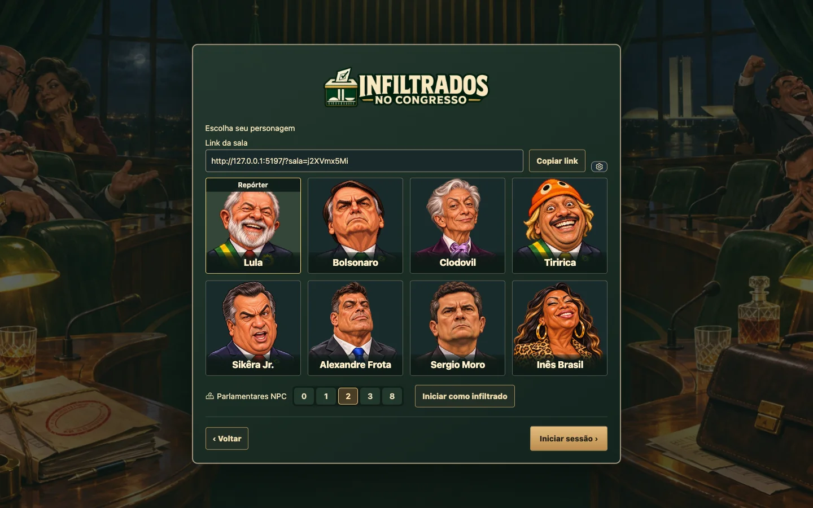
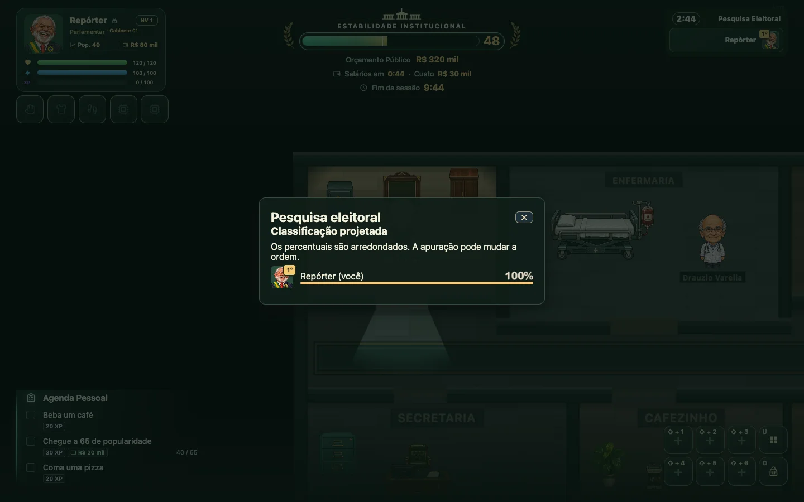

Parlamentares
Vocês vencem se mantiverem o Congresso estável até o fim da sessão ou se todos os infiltrados perderem o mandato. Negociem votos, investiguem as sabotagens e descubram quem está jogando contra vocês.
Grátis · Online · Até 12 jogadores
Reúna os amigos e transforme o Congresso em uma disputa de blefe, negociação e sabotagem. Jogue de graça, online e direto no navegador do computador.
Crie uma sala, compartilhe o link e descubra em quem dá para confiar. A conversa por voz acompanha vocês pelos corredores.
Jogar grátis com os amigos ↗
Como jogar
Vocês vencem se mantiverem o Congresso estável até o fim da sessão ou se todos os infiltrados perderem o mandato. Negociem votos, investiguem as sabotagens e descubram quem está jogando contra vocês.
Vocês vencem se provocarem o colapso do Congresso durante a partida ou deixarem a instituição instável até o fim da sessão. Misturem-se aos parlamentares e sabotem os planos da turma sem revelar seu papel.
É grátis e roda direto no navegador do computador. Abra o jogo, escolha um nick e entre na sua sala.
Você cria uma sala e compartilha o link ou o código com os amigos. Quem recebe o convite pode entrar na mesma partida.
A sessão tem um relógio de 10 minutos de jogo. Ele pausa durante votações e audiências, então reserve um pouco mais de tempo. A partida também pode terminar antes se um dos lados vencer.
De uma a 12 pessoas. Você pode começar sozinho ou reunir os amigos. Com menos de seis pessoas, bots completam as vagas e também podem ser infiltrados.
Ainda não. Por enquanto, o jogo é para desktop. Use o navegador do computador para jogar.
Sim, o jogo tem conversa por voz. Ative o microfone e permita o acesso no navegador. A voz acompanha a distância entre os personagens e as paredes, então chegar perto faz parte da conversa.
Perdendo o mandato. Isso pode acontecer por cassação, quando a maioria absoluta dos eleitores aptos vota contra um suspeito, ou na renovação eleitoral, quando quem tem menos força eleitoral perde a vaga, enquanto houver mais de três mandatos em disputa.
Quem perde o mandato continua no mapa como assessor, mas perde o voto, a verba do cargo e a capacidade de sabotar. Se todos os infiltrados perderem seus mandatos, os parlamentares vencem.
Cada pessoa recebe seu papel em segredo no começo da sessão. Observe as atitudes, converse com a turma e investigue as sabotagens. A caricatura escolhida não revela de que lado alguém está.
Elenco jogável
O papel é sorteado no início da sessão, independentemente da caricatura escolhida.
Capturas do jogo


Entre pelo navegador, crie sua sala e envie o link para a turma.
Jogar grátis com os amigos ↗